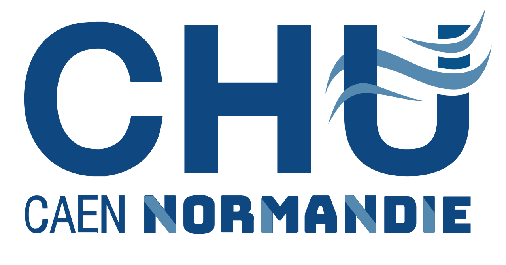
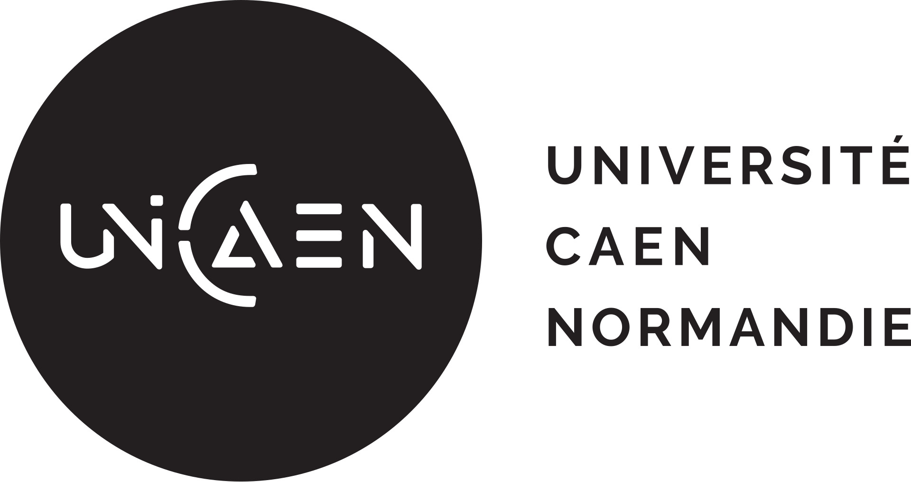
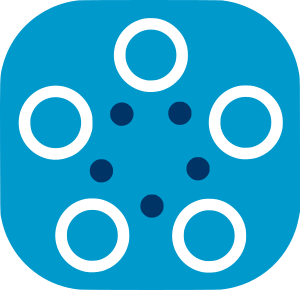

Dr Charles Dolladille
MD, PhD — cardiologist and pharmacologist. MCU-PH, Caen University Hospital; INSERM U1086 ANTICIPE.
A Franco-Japanese federated-learning pilot
Caen–Nagoya Alliance for AI in Health Data
Only model parameters cross the border. Patient data never moves.
We train a shared medical AI across the data warehouses of Caen University Hospital (France) and Nagoya University Hospital (Japan) to predict the cardiovascular side-effects of hormone therapy in prostate cancer.
A pilot, by design
Two sites are a deliberate choice: enough to demonstrate a federation designed for GDPR and APPI conformity end-to-end, small enough to document every step — governance, harmonisation, secure aggregation — in detail.
Our core deliverables are a reusable protocol and an APPI–GDPR operational blueprint that will let additional hospitals plug in without rebuilding the legal, ethical, and technical groundwork.
Beyond Caen–Nagoya, any hospital willing to keep patient data on-site and participate in federated learning is a candidate partner — see Become a partner hospital.
Androgen-deprivation therapy (ADT) is a cornerstone of prostate-cancer management but carries clinically meaningful cardiovascular and metabolic risks. GnRH agonists, GnRH antagonists, and ARSI do not share the same cardiovascular risk profile; HERO (NEJM, 2020) and PRONOUNCE (Circulation, 2021) are mixed, with the antagonist advantage concentrated in men with pre-existing CVD.
Single-country models fail to generalise across populations with different practices. International data is the answer; GDPR and APPI are the barrier. Federated learning is the bridge.
FedBioMed
Built on FedBioMed, scoped to what two hospitals can actually ship.
We will use FedBioMed, the open-source federated-learning framework developed by INRIA and Université Côte d'Azur. Each hospital runs a local FedBioMed node on harmonised OMOP-CDM data. An aggregator at a neutral location coordinates training rounds — parameters travel, data do not.
Research-use-only pilot. Caen Scientific & Ethics Committee favourable opinion received 30 March 2026. Nagoya IRB application and GDPR DPIA in progress. No patient data has been processed to date.
Any clinical deployment would require separate CE-marking (EU MDR 2017/745, Class IIa software, Rule 11) and PMDA SaMD clearance in Japan. French processing will follow MR-003/MR-004; Japanese processing will follow APPI Article 76 — final modalities subject to IRB approval.
12–24 month plan
Indicative milestones; detailed timing is subject to IRB and convention outcomes.
Nagoya IRB submission. DPIA. Data-access convention at Caen. FedBioMed kickoff.
OMOP variable list locked. Cohort definition frozen. Synthetic-data prototype end-to-end.
First federated round. MLP baseline with SecAgg. Sample-size and power report.
Model comparison, methods paper submitted, APPI–GDPR blueprint released.
External validation at a third site. Clinical paper. Open-source pipeline release.
MD, PhD — cardiologist and pharmacologist. MCU-PH, Caen University Hospital; INSERM U1086 ANTICIPE.
PharmD, MPH, MSc — pharmacologist. PhD candidate, Nagoya University.
MD, PhD — biostatistician with machine-learning expertise, Nagoya University.
Graduate School of Medicine — scientific and institutional lead on the Japanese side.
Official siteJapanese clinical and data-warehouse partner — hosts the FedBioMed node on the Nagoya side.
Official site
Entrepôt de Données de Santé, Department of Pharmacology, INSERM U1086 ANTICIPE.
Official site
Institutional partner on the French side, including legal and regulatory support.
Official site
Federated-learning framework and methodological partner (in-kind).
Official siteCANAL-AI would not exist without the support of the people and institutions below. Each person listed has given us their consent.
SECOM is our first supporter — thank you. CANAL-AI is designed to grow into a multi-site federation, and we are actively seeking additional funders to join them.
No patient data has been processed to date — these are regulatory and institutional milestones ahead of the federated training phase.
This site goes live.
Pilot funding awarded.
Favourable opinion issued 30 March 2026.
LoI formalising the Franco-Japanese pilot.
Funding
The pilot runs 2026–2028 and has a target budget of roughly €450k over 24 months. SECOM has committed the first tranche; additional funders are warmly welcome.
OMOP mapping, FedBioMed node setup, IRB processing, staff time at each partner hospital.
Training rounds, secure aggregation infrastructure, differential-privacy evaluation.
Publication of the APPI–GDPR blueprint and the OMOP-to-FedBioMed ETL (CC BY 4.0).
Funders are credited on this site, on the blueprint publication, and as named supporters on the methods paper.
Talk to us about fundingPartnership
CANAL-AI is designed to grow. If your hospital has a data warehouse and is willing to participate in federated learning, you may be a natural next node. Patient data never leaves your institution.
Transparency with funders and partners:
Nagoya IRB and the DPIA set the pace. Mitigation: blueprint work proceeds in parallel.
Two sites may yield limited MACE events at 24 months. Mitigation: power report, pragmatic baselines, plans for a third site.
Sites differ in case-mix and practice. Mitigation: FedProx, stratified evaluation, leave-one-site-out validation.
Contact
For scientific, institutional, or funding enquiries, write to the three principal investigators in one email.
Email the team